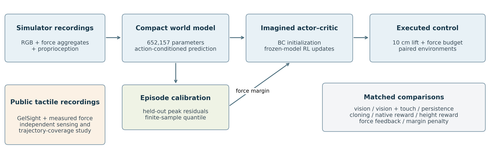
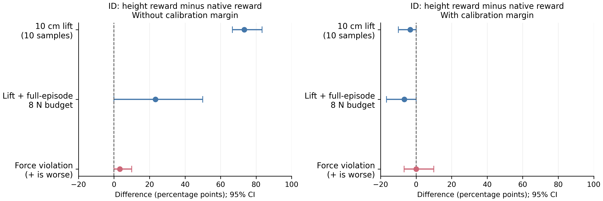

Better contact prediction is only the beginning. Does it lead to better force-constrained control?

A compact prediction-to-control pipeline, with tactile sensing evaluated as a separate evidence stream.
0.65Mworld-model parameters
160model-data episodes
680control executions
40independent test environments
ABSTRACT
From contact forecasts to executed decisions
We study whether better contact prediction leads to better robotic lifting. A compact, randomly initialized world model combines vision, touch, and proprioception to forecast lifting dynamics and train policies in imagination. Touch improves forecasts over vision alone, and a matched height-reward revision improves task completion. Force-budgeted success remains below simple force feedback, highlighting the distinction between accurate prediction, reward alignment, and constrained control.
A separate study of public GelSight recordings examines force estimation and trajectory-level uncertainty. Together, the experiments expose both the value and the limits of learned prediction for contact-rich manipulation.
METHOD
A small model. A complete control loop.
Three observations of history, five action-conditioned future steps, and actor-critic learning through a frozen world model.
01 / OBSERVE
Fuse vision and touch
Encode RGB, tactile force, and proprioceptive history into a 128-dimensional latent state.
02 / PREDICT
Roll forward under actions
Predict force, interval peaks, height, contact, support, reward, and auxiliary images over five transitions.
03 / LEARN
Optimize in imagination
Initialize the actor with behavior cloning, then improve imagined returns using the frozen dynamics model.
04 / EXECUTE
Measure the full episode
Compare reward choices, calibrated force penalties, and feedback baselines using physics-substep force peaks.
EXPERIMENTS
Prediction, task success, and force are separate outcomes.
Results retain simple baselines, unsuccessful runs, and the tradeoffs between task completion and contact force.
Adding touch reduces in-distribution endpoint and interval-peak force errors relative to the matched vision-only model. A simple tactile-persistence baseline remains stronger on both metrics.
Three training seeds. Force mean absolute error in newtons; lower is better.
In-distribution force prediction
Input / model
Endpoint
Interval peak
Vision only
1.058 N
2.724 N
Vision + touch
0.228 N
0.523 N
Tactile persistence
0.095 N
0.498 N
02
Aligning the reward helps lifting. The force budget remains difficult.
On fresh, matched in-distribution environments, changing the task reward raises strict lift success from 20.0% to 93.3%. Height-reward RL achieves 33.3% success within the 8 N per-finger budget, compared with 70.0% for force feedback.
RL results average three fixed trained policies on ten shared test environments. These are exploratory follow-up results, not overall rates across all conditions.

Matched reward comparison from the manuscript. Calibration margins reduce violations at the cost of task completion.
03
Calibrate the trajectory, not just individual frames.
In the separate public sensing study, held-out sphere force MAE is 0.04234 N. At nominal 90% coverage, calibrating whole trajectories substantially improves empirical trajectory coverage.
Transfer to flat and sharp contacts remains poor. These empirical intervals do not establish a closed-loop safety guarantee.
Frame-level calibration15.80%
Trajectory-level calibration87.36%
Observed coverage of complete trajectories · nominal target 90%
EVALUATION SCOPE
What the evidence supports
Explicit task and force criteria
Strict lifting requires a relative object height of at least 10 cm at ten consecutive 20 Hz observations. Joint success also requires every per-finger force peak to remain at or below 8 N throughout the complete episode, including setup and lowering.
Exploratory simulation evidence
Two control cohorts comprise 680 executions across 40 independent initial conditions. Out-of-distribution strict and joint success are zero; the mass/friction shift also challenges feasibility under the force budget. No physical-robot control or sim-to-real transfer is reported.
OPEN RESEARCH
Read, inspect, reproduce.
Source code, per-episode outcomes, manifests, and numerical results accompany the manuscript.
Raw datasets and trained checkpoints are not redistributed. The guide provides download and regeneration steps. The arXiv submission is awaiting a public identifier; the manuscript is available above.
Citation
@misc{ma2026compactvisuotactile,
title = {Compact Visuotactile World Models for Lifting:
Prediction, Reward Alignment, and Force Constraints},
author = {Ma, Qinzhen and Peng, Sida},
year = {2026},
note = {Manuscript; submitted to arXiv},
url = {https://github.com/Quinn-Ma/compact-visuotactile-world-models}
}